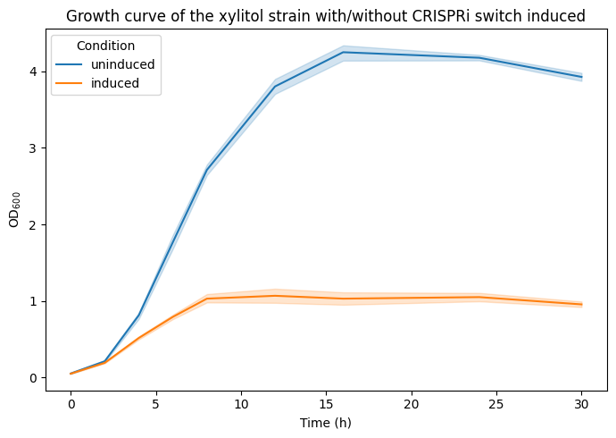

Figure 2a (Rong, Frey et. al. 2024)#
 Caption: “Growth curve of the xylitol strain with (dark blue)
or without (light blue) the CRISPRi switch induced. (…) Error bars and shaded
areas indicate mean ± s.d. (n = 4 biological replicates (…)
OD values (…) were measured using a Jenway 6705 UV/Vis spectrophotometer (…)”
Caption: “Growth curve of the xylitol strain with (dark blue)
or without (light blue) the CRISPRi switch induced. (…) Error bars and shaded
areas indicate mean ± s.d. (n = 4 biological replicates (…)
OD values (…) were measured using a Jenway 6705 UV/Vis spectrophotometer (…)”
import matplotlib.pyplot as plt
import pandas as pd
import seaborn as sns
For protability the data is directly included as a dictionary. See the commented out code how the data was obtained from the CSV file figure_2a.csv.
# fname = "figure_2a.csv"
# data = pd.read_csv(fname)
# data.to_dict(orient="list")
data = {
"time (h)": [0, 2, 4, 6, 8, 12, 16, 24, 30],
"rep1_uninduced": [0.046, 0.194, 0.74, 1.64, 2.62, 3.68, 4.08, 4.17, 3.88],
"rep2_uninduced": [0.048, 0.213, 0.82, 1.8, 2.72, 3.73, 4.32, 4.13, 3.87],
"rep3_uninduced": [0.06, 0.234, 0.85, 1.91, 2.81, 3.92, 4.36, 4.23, 3.95],
"rep4_uninduced": [0.054, 0.205, 0.84, 1.72, 2.7, 3.88, 4.24, 4.18, 4.01],
"rep1_induced": [0.046, 0.185, 0.5, 0.76, 0.97, 1.01, 0.93, 0.97, 0.9],
"rep2_induced": [0.055, 0.184, 0.493, 0.766, 0.99, 0.94, 0.97, 1.03, 0.94],
"rep3_induced": [0.05, 0.204, 0.534, 0.815, 1.06, 1.15, 1.06, 1.07, 1.01],
"rep4_induced": [0.046, 0.192, 0.537, 0.825, 1.1, 1.17, 1.16, 1.13, 0.97],
}
data = pd.DataFrame(data).set_index("time (h)").rename_axis(columns="replicate")
# data.head()
data_long = (
data.stack()
.to_frame("OD600")
.reset_index()
.assign(
condition=lambda x: x["replicate"].str.split("_").str[-1],
)
)
data_long
| time (h) | replicate | OD600 | condition | |
|---|---|---|---|---|
| 0 | 0 | rep1_uninduced | 0.046 | uninduced |
| 1 | 0 | rep2_uninduced | 0.048 | uninduced |
| 2 | 0 | rep3_uninduced | 0.060 | uninduced |
| 3 | 0 | rep4_uninduced | 0.054 | uninduced |
| 4 | 0 | rep1_induced | 0.046 | induced |
| ... | ... | ... | ... | ... |
| 67 | 30 | rep4_uninduced | 4.010 | uninduced |
| 68 | 30 | rep1_induced | 0.900 | induced |
| 69 | 30 | rep2_induced | 0.940 | induced |
| 70 | 30 | rep3_induced | 1.010 | induced |
| 71 | 30 | rep4_induced | 0.970 | induced |
72 rows × 4 columns
Create a line plot with error bars for the measurement across the timepoints. Either use matplotlib or seaborn for a static plot.
seaborn lineplot with error bars indicating standard deviation:
seaborn.lineplotmatplotlib error bars used
matplotlib.axes.Axes.errorbar
fig, ax = plt.subplots(figsize=(7, 5))
ax = sns.lineplot(
data=data_long,
x="time (h)",
y="OD600",
hue="condition",
ax=ax,
)
ax.set(
xlabel="Time (h)",
ylabel="$\\text{OD}_{600}$",
title="Growth curve of the xylitol strain with/without CRISPRi switch induced",
)
ax.legend(title="Condition")
fig.tight_layout()

Show code of one possible solution
display(sns.color_palette("Paired"))
fig, ax = plt.subplots(figsize=(7, 5))
ax = sns.lineplot(
data=data_long,
x="time (h)",
y="OD600",
hue="condition",
palette="Paired",
ci="sd",
marker="o",
err_style="bars",
err_kws={"capsize": 5},
ax=ax,
)
ax.set(
xlabel="Time (h)",
ylabel="$\\text{OD}_{600}$",
title="Growth curve of the xylitol strain with/without CRISPRi switch induced",
)
ax.legend(title="Condition")
fig.tight_layout()